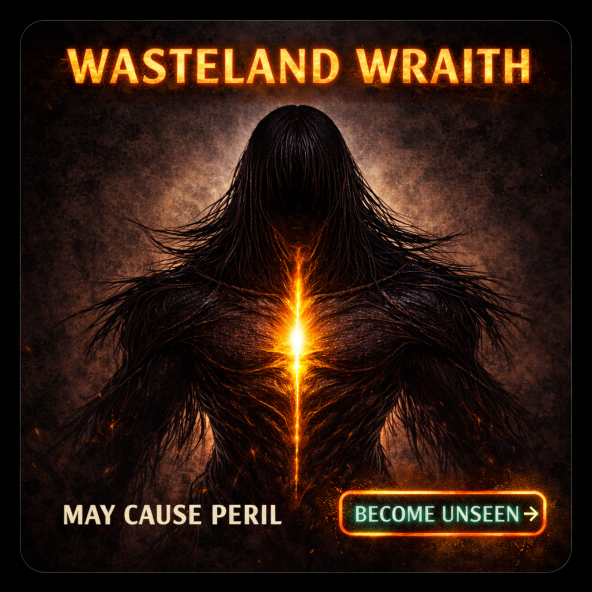
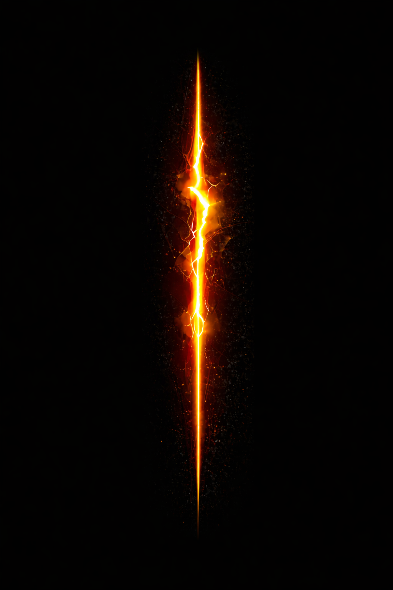

Artifact 01
Close-Up Poster
A near-range confrontation with the Wraith. All presence. No distance. No relief.
View on Etsy↗
Anomaly W-01
A presence of inevitability moving through ruin, aftermath, and silence.
It does not arrive early. It does not arrive late.
Field Note
The Wraith does not hunt. It does not warn. It appears when the outcome is already decided. This page is not a gallery. It is a controlled record: one novel, three artifacts, and a small amount of evidence left visible on purpose.
Primary Record
The first Wasteland Wraith novel. A post-apocalyptic horror story built around a presence that never causes death, only arrives when death has already become inevitable.
Summary
A ruined world. A recurring presence. Witnesses who do not always agree on what they saw, only on what followed. The Wraith remains silent. The verdict does not.
Observation Records
Not every sighting looks the same. The environment shifts. The witnesses differ. The constant is the same narrow fracture of light and the same silence before outcome.
Record A
Distant manifestation in open ruin. Figure partially lost to fog, scale uncertain, movement unconfirmed. Chest fissure visible at range. Emotional response in witnesses typically described as dread rather than panic.
Record B
Facility or corridor manifestation. Reports suggest the Wraith can appear within enclosed industrial spaces without sound, warning, or visible point of entry.
Record C
Repeated symbol association: a vertical fracture motif, often used here as a mark of identity, not as proof of origin or cause.
Recovered Artifacts
These are presented as fragments, not full display assets. Clean product photography lives on Etsy. Here, the page keeps only enough signal to guide the curious.
Artifact 01
A near-range confrontation with the Wraith. All presence. No distance. No relief.
View on Etsy↗
Artifact 02
A wider record of ruin and inevitability. The figure is not pursuing. It is simply there.
View on Etsy↗
Artifact 03
A minimal mark split by the same molten core seen in multiple recorded manifestations.
View on Etsy↗This page intentionally uses darkened overlays, cropped imagery, and repeated controlled assets instead of a public high-resolution gallery.